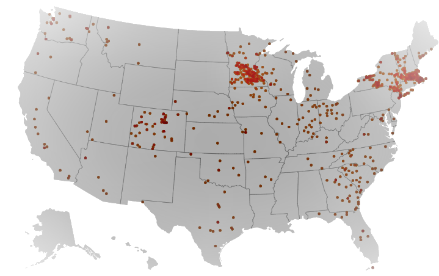

WHAT IS COMMUNITY SOLAR?
We acknowledge that, as much as we’d like to see solar panels on every single roof in the country, it’s not going to happen. Community solar, on the other hand, allows people who can’t or don’t want to put solar panels on their own land to still reap the benefits of solar.
WHAT IS COMMUNITY SOLAR?
A community solar project is a large, central solar power plant that generates electricity for multiple properties. Residential solar installations are measured in kilowatts, whereas community solar projects are measured in megawatts, which means that a single community solar project can power hundreds or even thousands of households. Roofless solar, solar gardens, and shared solar are all terms used to describe community solar.
It’s a terrific alternative for renters and those who live in shared housing because you don’t need a suitable rooftop for solar to join in a community solar project. Everyone may profit from solar while paying less for power by purchasing a share of or subscribing to a community solar project.
WHAT COMMUNITY SOLAR IS NOT
Other sorts of clean energy electricity rates and incentives, such as: Community solar is related to, and often mistaken with:
- Group Purchasing: Through discussions with a solar installation provider, such as Philadelphia’s Solarize program, a large number of households or businesses are able to acquire their own individual solar systems at bulk rates. Unlike a community solar project, where everyone benefits from a single central system, under a group purchasing program, everyone buys their own solar project.
- Green Power Rates: Green power rates allow a utility’s customers to buy electricity generated by renewable energy sources, such as large-scale hydro, wind, and solar. Those that enroll in green power programs do so mostly to ‘do the right thing,’ rather than to save money on their electricity bills, as these solutions are often more expensive. Importantly, participation in a green power plan does not always imply the construction of new renewable power plants, as the electricity might come from current sources. The majority of community solar projects, on the other hand, are designed with the primary goal of lowering participants’ electricity bills.
- Crowdfunding / Online Solar Investment Platforms: Some businesses have made renewable energy investment available via online platforms that allow you to invest in new solar projects. These kinds of initiatives are entirely financial investments: you don’t get any electricity from them, so they don’t help you save money. Note that while the profits from these initiatives are usually taxable (as investments), the savings from a community solar project are not.
HOW DOES COMMUNITY SOLAR WORK?
On a high level, when you join a community solar farm, you either get access to the electricity generated by a particular number of panels in the array or you buy a certain amount of electricity, usually at a lower cost than your regular utility rate.
Solar projects and activities for the community are often presented in two formats:
- Ownership: Participants can buy a specific number of panels or a piece of the community solar project under this arrangement. You’ll get energy bill credits/savings from all of the power produced by the solar panels you own if you invest in a community solar project.
- Subscription: With this concept, members can become subscribers and pay a cheaper monthly utility payment. Rather than owning panels or a stake in the project, you simply buy electricity at a cheaper cost than you would pay if you bought it from your utility.
WHERE IS COMMUNITY SOLAR AVAILABLE?
To open projects, legislative legislation on community solar is required. Although the vast majority of states in the United States have passed legislation permitting community solar projects, capacity remains concentrated in a few states. Based on Department of Energy’s Solar Energy Research Database, states where community solar option is available are mentioned below:
HOW DOES COMMUNITY SOLAR WORK?
Financial benefits of community solar
A mechanism known as “virtual net metering” makes community solar practical (VNM). Virtual net metering regulations, like rooftop solar net metering, allow homes and businesses to get net metering credits for renewable energy projects placed at a remote location.
Virtual net metering allows you to use solar energy produced at a remote location to offset electricity you pull from the grid, similar to how net metering allows you to use solar energy produced on your roof to offset any electricity you pull from the grid when the sun isn’t shining.
Utility benefits of community solar
There are a few ways community solar benefits electric utilities in addition to helping program participants save money on electricity.
For one thing, utilities can deliberately place roofless solar gardens on the grid in places where there are fewer generators. This serves to stabilize the grid as a whole, saving the utility money and time on costly grid maintenance and repairs in the long run.
Second, community solar farms are one way for utilities to meet the criteria of any state-imposed renewable portfolio mandates. On-grid community solar counts as renewable solar energy, which is becoming more widely mandated in specified percentages every year.
Personalize your solar analysis and get the best deal with Nexergy Marketplace.